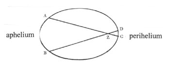
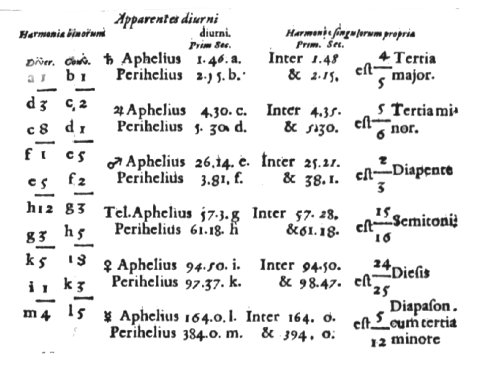

Inhoudsopgave
Harmonices mundi libri V Inhoudsopgave
Harmonices mundi libri V  De toongeslachten De toongeslachten
Harmonices mundi liber Quinque
De titel van het vijfde boek luidt: ‘Over de meest
perfecte harmonie van de hemelse bewegingen en de daaruit ontstane
excentriciteiten, halve diameters en omlooptijden.’ (De Harmonia
Perfectissima Motuum Coelestium, ortuque ex iisdem Eccentricitatem,
Semidiametrorumque et Temporum periodicorum.(1))
Het vijfde boek bestaat uit 10 hoofdstukken, gevolgd door een appendix waarin
Kepler twee onderwerpen behandelt, namelijk ten eerste een verontschuldiging
voor het feit dat er, anders dan aangekondigd staat in de inhoudsopgave van het
vijfde boek, geen vertaling aanwezig is van het derde boek van
Ptolemaeus’ Harmonika; Kepler vergelijkt slechts zijn boek met dat
van Ptolemaeus.(2) Ten tweede de (reeds
behandelde) aanval op Robert Fludds Utriusque cosmi ... historia.
In een lang voorwoord, dat gelezen kan worden als Keplers biografie (hij noemt
zijn ontdekking uit Mysterium Cosmographicum, zijn vertrek naar Praag en
het werk onder Tycho Brahe) en waarin hij zijn dankbaarheid uitdrukt voor Gods
hulp bij zijn ontdekking van de harmonie in de ‘hemelse bewegingen’
en zijn blijdschap met die ontdekking, plaatst hij de titels van de
hoofdstukken van het vijfde boek. Deze luiden als volgt:
- 1 - Over de vijf regelmatige lichamen.(De quinque solidis figuris
Regularibus.)
- 2 - Over de overeenkomst van de harmonische proporties
daarmee. (De cognatione cum iis, proportionum Harmonicarum.)
- 3 -
Samenvatting van de astronomische kennis benodigd bij de beschouwing van de
hemelse harmonie¨n. (Summa doctrinae Astronomicae, necessaria ad
contemplationem Harmoniarum coelestium.)
- 4 - Waarin de bewegingen van
de planeten in eenvoudige harmonieën zijn uitgedrukt, en dat alle
harmonieün die zich in de hemel bevinden, in de muziek optreden.
(Quibus in rebus ad Planetarum motus pertinentibus expressae sint Harmoniae
simplices, et quod omnes illae in Coelo reperiantur, quae in Cantu insunt.)
- 5 - De tonen van de toonladder, of de treden van het systeem, zowel als de
toongeslachten Durus en Mollis, worden door bepaalde bewegingen
uitgedrukt. (Claves Scalae Musicae, seu loca Systematis, et Genera
Harmoniarum, Durum et Molle, a certis motibus expressa esse.)
- 6 - De
toonaarden of de muzikale modi worden op bepaalde wijze door de planeten
uitgedrukt. (Tonos seu Modos Musicos, singulos quodammodo a singulis
planetis exprimi.)
- 7 - Dat er kontrapunten of gezamenlijke
harmonieün van alle planeten kunnen optreden, en wel verschillende, als de
een uit de ander volgt. (Contrapuncta, seu Harmonias universales omnium
Planetarum, easque diversas, aliam scilicet ex alia, existere posse.)
- 8
- Dat in de planeten de natuur van de vier stemmen: diskant, alt, tenor en bas
is uitgedrukt. (In Planetis expressa esse naturas quatuor vocum, Discanti,
Alti, Tenoris, Bassi.)
- 9 - Bewijs, dat om deze harmonische ordening te
verkrijgen, de excentriciteiten van de planeten, die ieder voor zich zonder
onderscheid heeft, zo en niet anders gemaakt moeten worden. (Demonstratio,
quod ad obtinendam hanc dispositionem harmonicam, Eccentricitates Planetarum
illae ipsae, quas quilibet pro se habet, et non alia, constitui debuerint.)
- 10 - Epiloog over de zon, uit bepaalde vermoedens. (Epilogus de Sole,
ex coniecturis pragnantissimis.)(3)
Zoals gezegd, in het eerste hoofdstuk haalt Kepler zijn oude
theorie uit Mysterium cosmographicum aan en bespreekt hij nogmaals de
mogelijkheid de vijf platonische lichamen(4) tussen de planeetbanen aan te brengen. In hoofdstuk 2 zet
deze bespreking zich voort.
Wel heeft Kepler zich inmiddels gerealiseerd dat de platonische lichamen
slechts ongeveer de banen bepalen(5):
zij bevinden zich tussen de planeetbanen, maar daarnaast heeft elke planeetbaan
een bepaalde ruimte waarbinnen de excentriciteit verdisconteerd is. De
ondergrens van deze ruimte is het perihelium (punt op de baan van een planeet,
planetoïde of komeet dat zich het dichtst bij de zon bevindt), de
bovengrens is het aphelium (punt op de baan van een planeet, planetoïde of
komeet dat zich het verst van de zon af bevindt) - zie afbeelding 29. De vijf
platonische lichamen bepalen overigens wel het feit dat er maar zes banen(6) en zes hemellichamen zijn.(7)
In hoofdstuk drie behandelt Kepler in dertien punten de in
zijn ogen onmisbare astronomische kennis om het vijfde boek te kunnen
begrijpen. Zeer nadrukkelijk wijst Kepler hier Ptolemaeus’ hypothese, het
geocentrisch universum, af en verklaart zich voorstander van Copernicus’
mening, waartoe hij iedereen zou willen overhalen.(8)
Het eerste punt dat Kepler dan ook geeft is de verplichting
te aanvaarden dat de planeten om de zon bewegen (behalve de maan, die de aarde
als centrum heeft).(9) Ten tweede dat
de planeten excentrisch bewegen (ze hebben een punt op hun baan het dichtst bij
de zon - perihelium - en een het verst weg - aphelium).(10) Punt acht is Keplers beroemde derde planeetwet(11), maar deze wet speelde geen rol van
betekenis in Harmonices mundi.(12)
II
In hoofdstuk vier maakt Kepler dan een begin met het
antwoord op de vraag op welke wijze er harmonie in de bewegingen van de
planeten aanwezig is. Hij stelt zes punten van mogelijk onderzoek voor
(bijvoorbeeld de afstanden van de planeten tot de zon, of hun omloopsnelheden)
en elk daarvan onderzoekt hij afzonderlijk op hun mogelijkheden.(13)
Maar Kepler kan slechts in het vijfde punt, de extreme hoeksnelheden(14) van de planetenbanen gezien vanaf
de zon (... apparentes veluti spectantibus ex Sole.(15)) harmonie ontdekken; in de
verhoudingen tussen de schijnbare (want slechts voor de aanschouwer aanwezige)
snelheden van de planeten in aphelium (het verst van de zon) en perihelium (het
dichtst bij de zon), gezien vanaf de zon.
|  afb. 23 ‘Schijnbare
hoeksnelheden in een elliptische baan' uit: Michael Dickreiter, Der
Musiktheoretiker Johannes Kepler. Bern, A. Francke Verlag, 1973. p.
102 | | Uit
afbeelding 23(16) is direct duidelijk
dat een planeet (wanneer een constante snelheid wordt aangenomen) meer tijd
nodig heeft voor de afstand AB, dan voor de afstand CD: de
hoeksnelheid AB is geringer dan die van CD. In werkelijkheid is
de snelheid van een planeet niet constant: in het perihelium is de reële
snelheid van een planeet onder invloed van het zwaartekrachtveld van de zon
groter (de zogenaamde ‘zwaartekrachtslinger’, een gegeven dat in de
ruimtevaart werd gebruikt om bijvoorbeeld de interplanetaire ruimtesonde
‘Voyager’ extra snelheid te geven(17)). Hierdoor wordt het verschil in snelheid tussen
aphelium en perihelium nog vergroot. |
Kepler construeert een tabel waarin hij deze schijnbare
snelheden (nogmaals: de extreme hoeksnelheden gezien vanaf de zon) opneemt en
deze tabel dient als uitgangspunt voor Keplers verdere harmonische speculaties
in Harmonices mundi. De tabel ziet er als volgt uit (zie ook afbeelding
23, het origineel uit HM.)(18):
Tabel 1
Schijnbare (extreme hoek-) snelheden
1
Harmonieën
tussen naburige planeten
-
divergerend
- convergerend |
2
Schijnbare dagelijkse beweging planeet
min. sec. |
3
Harmonische proporties min.
sec. verhouding A:P |
a:d=1:3 (duodecime)
b:c=1:2 (octaaf) |
saturnus
A
1’46’’ a
P
2’15’’ b |
1’48’’
4:5 (grote terts)
2’15’’ |
c:f=1:8 (3 octaven)
d:e=5:24 (2 oct.+kl. terts) |
jupiter
A
4’30’’ c
P
5’30’’ d |
4’35’’
5:6 (kleine terts)
5’30’’ |
e:h=5:12
(undecime)
f:g=2:3
(kwint) |
mars
A 26’14’’
e
P
38’1’’ f |
25’21’’
2:3 (kwint)
38’1’’ |
g:k=3:5 (grote
sext)
h:i=5:8 (kleine
sext) |
aarde
A 57’3’’
g
P 61’18’’
h |
57’28’’
15:16 (halve toon)
61’18’’ |
i:m=1:4 (2
octaven)
k:l=3:5 (grote
sext) |
venus
A 94’50’’ i
P 97’37’’
k |
94’50’’
24:25 (diesis)
98’47’’ |
| |
mercurius
A 164’0’’ l
P 384’0’’
m |
164’0’’
5:12 undecime)
394’0’’ |
De middelste kolom bevat de schijnbare dagelijkse snelheden
weergegeven in boogminuten en -seconden (een boogminuut is het zestigste deel
van een graad, de zichtbare hemel -180o - bestaat dus uit 180 x 60 = 10800
boogminuten, die elk weer uit 60 boogseconden bestaan), berekend uit de
astronomische waarnemingen19 ,
in aphelium (A) en perihelium (P).
De rechterkolom bevat geen reële, maar ideale snelheden
uitgaande van de harmonische proporties; zij worden verkregen door een van de
extreme snelheden aan te passen: de extreme snelheid in aphelium van aarde,
mars, jupiter en saturnus, en de extreme snelheid in perihelium van venus en
mercurius. De overeenkomst tussen de reële en de ideële snelheden is,
zo merkt Kepler op, zeer groot.(20)
De linkerkolom bevat een vergelijking tussen de verhoudingen
van twee naburige planeten met elkaar, divergerend (van elkaar weg bewegend) en
convergerend (naar elkaar toebewegend).(21)
Aan het eind van hoofdstuk vier (HM.p. 201-202/304)
merkt Kepler op dat er een verschil bestaat tussen de harmonieën (A:P) van
de afzonderlijke planeten en de planetenparen. De harmonische verhouding van A
en P van een afzonderlijke planeet kan niet op hetzelfde moment worden
waargenomen, simpelweg omdat een planeet niet tegelijkertijd in A en P kan
zijn, bij een planetenpaar daarentegen is dit wel mogelijk.
Er kan dus de volgende analogie gemaakt worden, zo vervolgt
Kepler, de beweging van een enkele planeet is vergelijkbaar met eenstemmig
gezang, of ‘koor’ gezang, het enige dat de ‘ouden’
kenden, de beweging van meerdere planeten met meerstemmig gezang, ook wel
’gefigureerd’ genaamd, hetgeen in de laatste eeuwen is
uitgevonden.(22)
De gegevens uit tabel 1 interpreteert Kepler dan ook achtereenvolgens als
toongeslacht (in caput V), modus (in caput VI) en akkoord (in caput VII). Ik
zal deze punten dan ook achtereenvolgens behandelen.
Afbeeldingen

afb. 24 ‘Tabel 1Â HM V, p.
198
1. HM. V, p. 177
(277) (terug naar tekst)
2. Kepler had oorspronkelijk gemeend van Ptolemaeus’
werk Harmonika een vertaling te maken (vanaf hoofdstuk 3 van boek 3, het
gedeelte van muziekfilosofische aard, dus over het verband van muziek met ziel
en kosmos en de deugden) met daarbij een commentaar, maar uiteindelijk kwamen
er slechts drie pagina’s in HM. over Ptolemaeus. Zie hierover
verder, en voor een vergelijking van Ptolemaeus’ werk met dat van Kepler,
Bruce Stephenson, Heavens. pp. 37-38 en pp. 98-117 (terug naar tekst)
3. HM. inleiding V. p. 179 (280) (terug naar tekst)
4. Aan de vijf platonische lichamen voegt Kepler een zesde
toe, een sterachtig lichaam - `egel’ genaamd (enchinus), - een
ontdekking die aan hem wordt toegeschreven (zie afbeelding 20, rechts onder). Deze figuur ontstaat door
de (pentagonale) vlakken van de dodecaeder tot een punt te verlengen. Waar
Kepler in Mysterium Cosmographicum de vijf platonische lichamen tussen
de planeetbanen aanbracht, zo probeert hij dit ook wat betreft deze
`egel’: zij past het beste tussen de banen van mars en venus (zie
HM. V, p. 187/288). Maar zie ook Bruce Stephenson, Heavens. pp.
130-134 (terug naar tekst)
5. HM. V, p. 186 (288). N.B. Dit is het vierde punt
uit Keplers hoofdstuk 3 (terug naar tekst)
6. Overigens, al sinds Mysterium Cosmographicum wees
Kepler de gedachte af dat de planetenbanen reüle `sferen’ zouden
zijn (de oude gedachte dat de planeten vastgezet zouden zijn in concrete
`bollen’ die in elkaar gesloten zijn). Voor Kepler zijn de planetenbanen
slechts mathematische loci. Zie Bruce Stephenson, Heavens. p. 75;
of (een verwijzing van Stephenson): Judith V. Field, `Kepler’s Rejection
of Solid Celestial Spheres’ Vistas in Astronomy 23 (1979): pp.
207-211 (terug naar tekst)
7. HM. V, p. 186 (288). N.B. Dit is het derde punt
uit Keplers hoofdstuk 3. Zie ook Bruce Stephenson, Heavens. p. 130 en,
uitgebreid over deze dertien punten, pp. 135-145 (terug naar
tekst)
8. HM. V, p. 184 (286): `Initio sciant hoc lectores,
Hypotheses astronomicas antiquas Ptolemaei ... non tradunt namque veram et
Corporum mundi dispositionem, et Motuum politiam. In earum locum, etsi facere
aliter non possum, quin Copernici de mundo sententiam unice et substituam, et
si possibile esset, omnibus persuadeam ...’ (terug naar tekst)
9. Ibid. p. 186 (287) (terug naar
tekst)
10. Ibid. p. 186 (287-288) (terug naar tekst)
11. Ibid., p. 189-190 (291). In moderne
terminologie luidt deze derde wet als volgt: `De kwadraten van de omlooptijden
verhouden zich als de derde machten van de gemiddelde afstanden tot de
zon.’ Voor een uitvoerige behandeling van deze wet, zie Bruce Stephenson,
Heavens. p. 140 e.v.. Keplers eerste wet (`de planeten bewegen zich in
ellipsbanen om de zon, waarbij de zon zich in een van de twee brandpunten van
de ellips bevindt) en tweede wet (de zgn. `perkenwet’: `de lijn die een
planeet met de zon verbindt doorloopt in gelijke tijden gelijke
oppervlakken’) worden behandeld door bijv. E.J. Dijksterhuis, De
Mechanisering van het Wereldbeeld. pp. 338-357. (terug
naar tekst)
12. E.J. Dijksterhuis, De mechanisering van het
wereldbeeld. p. 356 (terug naar tekst)
13. HM. V, pp. 192-193 (pp. 294-295). Voor een
behandeling van al deze punten, zie Bruce Stephenson, Heavens. p. 145
e.v. (terug naar tekst)
14. Het adjectief `extreem’ duidt op de maximale
waarde van de positie in de excentrische baan (dus: `verst’ weg, en
`dichtst’ bij). (terug naar tekst)
15. HM. V, p. 192 (295) (terug
naar tekst)
16. Uit: Michael Dickreiter, Musiktheoretiker. p.
102 (terug naar tekst)
17. Govert Schilling, Prisma van de Sterrekunde.
Utrecht/Anterwerpen, Het Spectrum, 1992. p. 252 (terug naar
tekst)
18. Naar: HM. V, p. 198 (301); maar zie ook Bruce
Stephenson, Heavens. pp. 148-151 (terug naar
tekst)
19. Bruce Stephenson, Heavens. p. 149 (terug naar tekst)
20. HM. V, p. 199 (301) (terug
naar tekst)
21. Deze verhoudingen spelen echter geen rol van betekenis
in de komende vergelijking van de schijnbare snelheden met toongeslachten, modi
en akkoorden. Zie voor een verdere uiteenzetting over de linkerkolom Bruce
Stephenson, Heavens. pp. 151-154. Over de verhoudingen in de linkerkolom
dient verder te worden opgemerkt dat ook deze ideale verhoudingen zijn,
bijvoorbeeld de verhouding jupiter A: mars P als
4’30’’:38’1’’ komt niet precies overeen met
1:8, maar is iets tussen een diesis en een halve toon groter; deze ideële
snelheden zijn echter weer andere dan die van de rechterkolom. Zie hierover
Michael Dickreiter, Musiktheoretiker. pp. 100-101 (terug naar tekst)
22. HM. V, pp. 201-202 (304): `Adeoque quae
proportio est Cantus simplicis seu Monodiae, quam Choralem Musicam dicimus, et
quae sola Veteribus fuit cognita, ad cantum plurium vocum, Figuratum dictum,
inventum proximorum saeculorum: eadem est proportio Harmoniarum, quas singuli
designant Planetas ad Harmonias junctorum.’
|